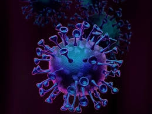
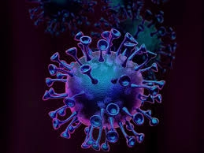

.png) 

La virologie est la discipline scientifique s'attachant à l'étude, l'utilisation et la lutte contre les virus et agents infectieux assimilés (viroïde, etc). La virologie est généralement considérée comme une branche de la biologie (microbiologie, agronomie en particulier pour créer des organismes génétiquement modifiés, évolution des espèces) ou de la médecine (pathologie, thérapie génique, autres thérapies innovantes basées sur les virus (cancérologie, contrôle du microbiote, etc)). Dans ce domaines, les recherches menées servent particulièrement : à explorer pour un virus donné : sa structure et sa composition, les mécanismes lui permettant d'infecter un hôte, quel est son tropisme, et sa position dans la classification des virus. à décrire les maladies virales ainsi que retracer l'évolution des virus, notamment quand une espèce virale mute ou change d'hôte. à mettre à profit des techniques pour les isoler et les cultiver, dans une optique d'usages en recherche et en thérapie.
Faculte Polydisciplinaire Taroudant
jesuis Khalid Bouadi étudiant en deuxiéme anné au faculté polydisciplinaire de taroudante j’ai créé ce site afin de publier tout ce qui concerne la biologie. sur mon site vous trouvez une explication de tous les cours de biologie il faut juste cliquer sur ce lien en rouge TUTORIELS puis le module que vous voulais j'espére que tu aime mon site